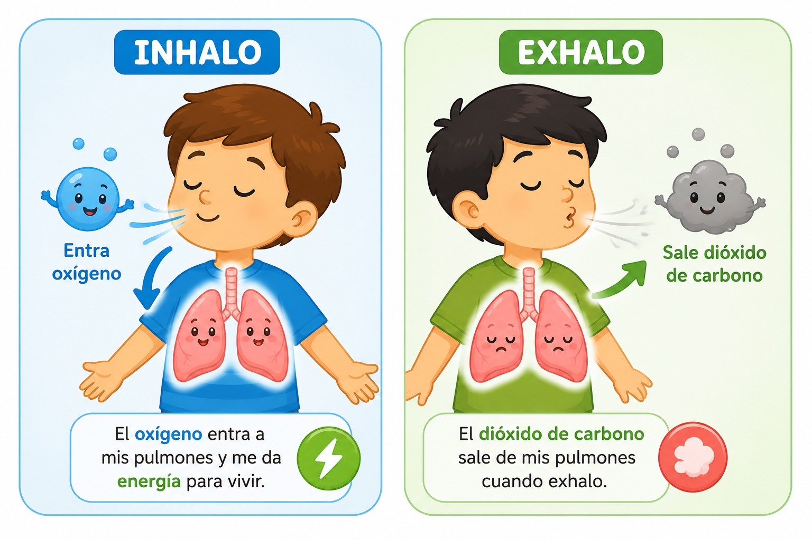
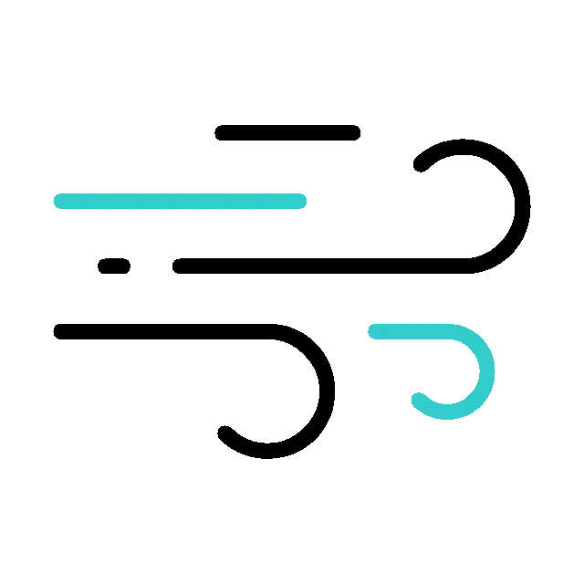
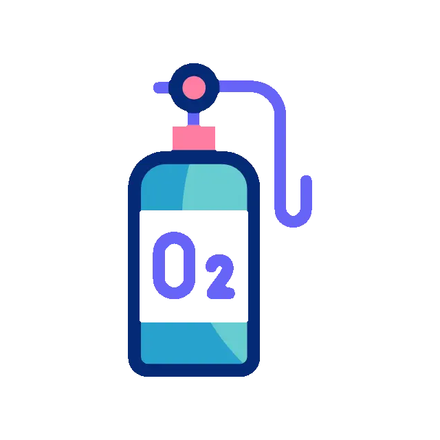

El intercambio de gases ocurre dentro de los pulmones. Alli, el aire que respiramos lleva oxigeno, que nuestro cuerpo necesita para vivir.
Cuando el aire entra en los pulmones, el oxigeno pasa a la sangre. Al mismo tiempo, la sangre deja un gas que el cuerpo ya no necesita, llamado dioxido de carbono. Despues, ese gas sale de nuestro cuerpo cuando exhalamos.

Cuando inhalamos, el aire entra por la nariz o la boca y llega a los pulmones.
El oxigeno pasa a la sangre y viaja por todo el cuerpo para darnos energia.
El cuerpo expulsa el dioxido de carbono cuando exhalamos el aire.
Dentro de los pulmones hay unas bolsitas muy pequenas llamadas alveolos. Alli ocurre el intercambio de gases.

